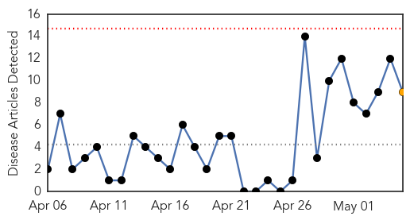
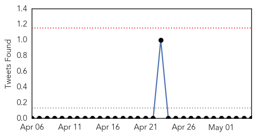
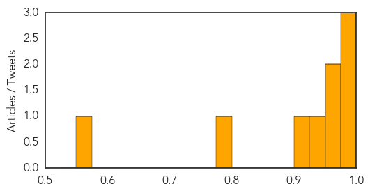
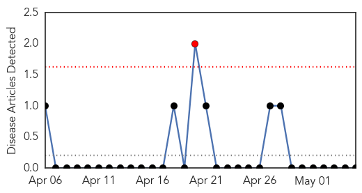

Cholera
30-Day Web Trend
0 alerts, 1 warnings

30-Day Twitter Trend
0 alerts, 0 warnings

Article Locations

Article Confidences
Top Articles:
- 0.996
- Cholera vaccine stocks could save millions of refugees in Nepal
- 0.987
- Aid agencies issue cholera and dysentery warning in Nepal quake aftermath
- 0.981
- Nepal could see massive outbreak of cholera, says UK's Disasters Emergency Committee
- 0.970
- Disease warning in quake aftermath
- 0.960
- Disease warning in quake aftermath
- 0.933
- Disease Risk Sparks Urgent Aid Plea In Nepal
- 0.906
- Kenya : Kidero raises cholera red flag
- 0.799
- Disease Risk Sparks Urgent Aid Plea In Nepal
- 0.571
- More Than 7,500 Dead In Earthquake, 14,500 Injured, Government Says
Top Tweets:
-
No tweets found for May 05, 2015
Yellow Fever
30-Day Web Trend
1 alerts, 0 warnings

30-Day Twitter Trend
0 alerts, 0 warnings

Article Locations

Article Confidences

Top Articles:
-
No articles found for May 05, 2015
Top Tweets:
-
No tweets found for May 05, 2015